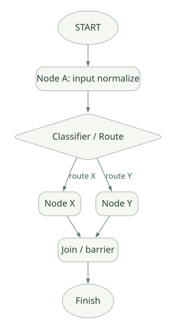

SECOND STUDY / 협업·Graph·복구
협업·Graph·복구
이번 단원의 읽는 관점
기존 패턴·AgentTool·Transfer와 새 Graph 실행의 Trigger·Scheduler·Checkpoint를 연결합니다.
살펴볼 경계deprecated의 잔여 제약, Resume·Replay·Retry와 미완료 복원 범위를 확인하세요.
이 페이지의 세부 목차
Part VI. Multi-Agent와 명시적 Workflow
22. 기존 Template Workflow는 어떤 구조였나?#
ADK가 초기에 제시한 대표 패턴은 세 가지다.
- SequentialAgent: Subagent를 순서대로 실행한다. 앞 단계의
output_key등을 State로 넘기는 구조를 활용할 수 있다. - ParallelAgent: 여러 Subagent를 별도 Branch로 동시에 실행하고 Event를 합친다.
- LoopAgent: 종료·반복 조건에 따라 Subagent 실행을 되풀이한다.
이들은 LLM이 그때그때 다음 실행 경로를 자유롭게 결정하는 '자율 에이전트' 자체가 아니라 실행 패턴을 고정한 조정자다. 구성요소가 Agent라는 점과 Workflow 제어 흐름을 갖는다는 점을 동시에 가진다.
ParallelAgent의 실체#
[SRC] agents/parallel_agent.py의 _create_branch_ctx_for_sub_agent는 부모 InvocationContext를 복사하고 Subagent마다 Branch를 만든다. _merge_agent_run은 asyncio.TaskGroup 및 asyncio.Queue로 여러 Event 스트림을 합친다. [S09]
ParallelAgent
├─ branch A: sub-agent A → Event A1 ─┐
├─ branch B: sub-agent B → Event B1 ─┼─> queue → parent event stream
└─ branch C: sub-agent C → Event C1 ─┘병렬 Tool의 asyncio.gather와 달리, ParallelAgent는 Agent마다 여러 이벤트를 시간에 따라 계속 생성하는 AsyncGenerator들을 합쳐야 한다. 따라서 각 Branch에서 나온 Event를 Queue에 넣고, 부모가 소비했다는 Ack(asyncio.Event)를 기다리는 구조가 있다. [S09]
이 Ack가 중요한 이유는 하위 Generator가 상위 소비자의 속도를 무시하고 무한히 Event를 생산하지 않도록 생산자-소비자 사이의 Backpressure를 형성하기 때문이다. asyncio.TaskGroup은 Branch 중 하나가 실패하거나 escalation이 발생했을 때 다른 Branch를 취소하고 오류를 다시 전파하는 데도 관여한다.
ParallelAgent의 deprecated 주의#
[SRC] v2.13.0 소스에서 ParallelAgent는 Workflow로 전환할 것을 권하는 deprecated 데코레이터를 갖는다. 하지만 Workflow를 LlmAgent의 Subagent로 바로 모든 경우에 넣을 수 있는 것은 아직 아니라는 제한도 명시되어 있다. 장기 유지보수에선 신규 Graph Workflow를 우선 분석하되, 이전 템플릿 실행 경로를 버려선 안 된다. [S09]
23. Multi-Agent Delegation: AgentTool·Transfer·Task Mode#
Multi-Agent는 'Agent가 여러 개 존재한다'만으로 구별하기 어렵다. 최소 다음 세 가지를 나눠야 한다.
| 방식 | 흐름 제어 | 반환 형태 | 핵심 조사 대상 |
|---|---|---|---|
| Subagent Transfer | 현재 모델이 다른 Agent로 제어권 이전 | 새 Agent의 Event Stream | Transfer Event와 Agent routing |
Agent as Tool / AgentTool |
부모 모델이 하위 Agent를 Tool처럼 호출 | Tool Result로 반환 | 독립 실행·상태 격리·비용 |
| Graph Workflow 노드 | 개발자가 Edge로 실행 경로 명시 | Node Output/Event | Scheduler·Trigger·Checkpoint |
서로 다른 질문: 하위 Agent를 호출했을 때 부모 컨텍스트를 얼마나 공유하는가, 하위 응답을 통째로 상위에 전달하는가, 부모가 최종 응답 생성 권한을 유지하는가, 실패 시 재시작하는 단위는 무엇인가?
[SRC] v2.13.0의 루트 LlmAgent는 chat와 task mode를 구분하고, Task Mode는 finish_task 도구 완료 결과를 terminal Event의 output으로 보내는 경로가 있다. 다만 이것이 병렬 Agent 구현이나 A2A 통신과 동의어는 아니다. [S01]
MCP와 A2A의 범주 차이#
- MCP: Agent Runtime이 외부 Tool/Resource/Prompt를 연결하는 데 초점을 둔다. Tool 공급자와 모델 호출자가 분리된다.
- A2A: 독립적으로 운영되는 Agent/Task 시스템끼리 상태·메시지·아티팩트를 주고받는 프로토콜이다. 상대 Agent가 별도 프로세스나 서버에 있을 수 있다.
- AgentTool: 한 애플리케이션 안에서 Agent를 Tool로 감싸는 라이브러리 수준 추상화다.
프로토콜이 비슷한 기능을 표현하더라도 어느 프로세스와 신원·실행 권한을 공유하는지가 중요하다. 단순히 'Subagent가 있으니 A2A'라고 표현하지 않는다.
24. ADK 2.0 Workflow: Graph와 Node라는 다른 실행 세계#
[SRC] workflow/_workflow.py는 Workflow(BaseNode)로 정의되어 있다. 이 클래스는 그래프 정의와 실행 엔진을 결합하며 _run_impl에서 SETUP → LOOP → FINALIZE 단계를 수행한다. [S10]
[SRC] workflow/_graph.py의 Graph와 Edge는 노드 연결/라우팅 구조를 표현한다. RoutingMap은 조건에 따라 다른 대상 Node를 활성화할 수 있게 하는 선언형 데이터다. [S11]
가로로 이동해서 읽을 수 있습니다. 도식 크게 보기 ↗

원문의 학습용 도식입니다. 연결 방향·분기 조건·점선·쌍방향 연결을 보존해 세로로 배치했습니다. 실제 구현·의사코드·해석의 구분은 본문을 함께 읽으세요.
도식 원문 보기 (Mermaid)
flowchart TD
START((START)) --> A[Node A: input normalize]
A --> B{Classifier / Route}
B -->|route X| X[Node X]
B -->|route Y| Y[Node Y]
X --> JOIN[Join / barrier]
Y --> JOIN
JOIN --> END((Finish))이 그림에서 Node는 Agent일 수도 있고, Python 함수나 Tool을 래핑한 노드일 수도 있다. 따라서 모든 Node가 독자적인 LLM 사고 루프를 갖지는 않는다.
BaseNode.run()의 실제 경계#
[SRC] BaseNode.run(ctx, node_input)는 입력을 검증하고 _run_impl()의 Yield를 정규화한다.
None: 출력하지 않고 건너뛴다.Event: 그대로 이벤트 경로로 전달한다(필요한 output 검증 포함).RequestInput: interrupt 성격의 Event로 변환한다.- 그 외 Python 값: 검증 후
Event(output=...)로 감싼다.
[참조: S12, run 약 153–195행]
설계적 핵심: 개발자는 계산 로직이 반드시 Event 객체를 직접 만들어야 한다고 생각하지 않아도 된다. Node 경계에서 결과를 같은 Event Stream으로 통일하고, Graph가 그 Output/Route를 읽어 다음 노드를 결정한다.
Agent Loop vs Workflow Loop#
| 비교 | LLM Agent Loop | Graph Workflow Loop |
|---|---|---|
| 다음 단계 선택 | 모델 응답의 Tool Call·Transfer | Graph Edge·Trigger·Route |
| 반복 단위 | 대개 LLM 호출 1회 | 노드 Schedule·완료·다음 Trigger |
| 중간 결과 | 대화 내용/Tool Event | Node Output/Route/State Event |
| 예외/복구 | Agent/Tool Run의 재호출·Resume | 실패한 Node 실행·Workflow 재개 |
| 장점 | 유연한 탐색과 판단 | 실행 경로 통제·감사·재현성 |
| 위험 | 비용·환각·불필요한 Tool 호출 | Graph 복잡성·상태/Join 관리 |
25. Workflow Scheduler는 무엇을 보존하는가?#
[SRC] Workflow._run_impl은 이전 Events를 스캔해 실행 이력을 복구하는 절차를 거친 뒤 _run_loop로 진입한다. _run_loop는 현재 준비 가능한 Node를 스케줄링하고 완료를 처리하며, 최종 상태를 정리한다. [S10]
Workflow._run_impl
├─ scan existing workflow events (resume / replay)
├─ construct loop state
├─ _run_loop
│ ├─ consume trigger(s)
│ ├─ schedule ready node(s)
│ ├─ collect output / interrupt / exception
│ ├─ update NodeState
│ ├─ emit checkpoint if configured
│ └─ buffer downstream triggers
└─ finalize / end_of_agent marker / cleanupNode State에는 최소 다음 개념이 필요하다.
- Ready/Pending: 실행 가능하지만 아직 완료하지 않음.
- Running: Async Task가 실행 중임.
- Waiting/Interrupted: 외부 승인·입력 또는 추가 Output을 기다림.
- Completed: 출력/Route를 수집했고 후속 실행의 원인이 될 수 있음.
- Failed/Retry: 오류 및 재시도 정책에 따라 다시 수행될 수 있음.
실제 v2.13.0 NodeStatus는 INACTIVE, PENDING, RUNNING, COMPLETED, WAITING, FAILED, CANCELLED를 정의한다. Enum 정수 값이 복원 Session에 기록되므로 항목을 재배정하면 안 된다는 소스 주석도 있다. [SRC: S17]
Edge·Trigger·Join 분석#
그래프는 단순 DAG로만 끝나지 않을 수 있다. 조건 Edge는 특정 경로만 활성화하고, Fan-out은 여러 Node를 동시에 실행하며, Join/Barrier는 선행 Node들의 완료 조건을 확인해야 한다. workflow/_workflow.py에는 _buffer_barrier_trigger와 _buffer_downstream_triggers가 존재한다. [S10]
학습 질문: 선행 노드 둘 중 하나가 실패했을 때 Join은 영원히 대기하는가, 실패를 전달하는가, 또는 다른 Branch가 결과를 대체하는가? 이는 그래프 선언뿐 아니라 Scheduler의 예외 경로를 확인해야 한다.